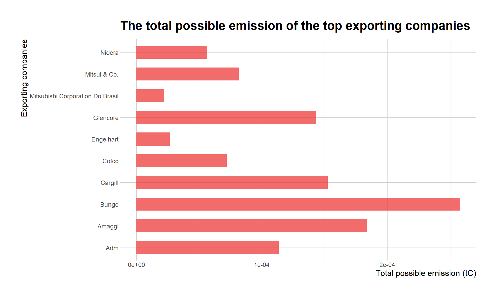
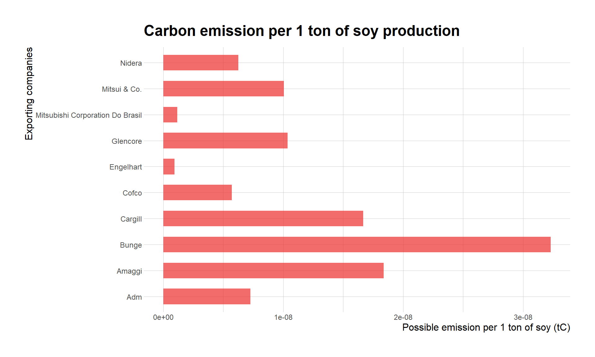

Deforestation
Description
Using the data set of export-import of soy production, I was asked to identify:
1. The largest soy producing state in Brazil.
2. The soy exporting companies from this state that are exposed to deforestation.
library(ggplot2) # for visualization
library(hrbrthemes) # for ggplot theme
library(RColorBrewer) # to generate a color palette
library(gghighlight) # highlighting the bars in a plot
library(stringr) # string manipulation
library(dplyr) # subsetting the dataset
soy_df = read.csv("Brazil-soy - Brazil-soy.csv", header = TRUE, na.strings = " ")
# Assumption: NA in column soy_deforestation [,5] means that there is no
# deforestation risks
soy_df[is.na(soy_df)] = 0The largest soy producing state in Brazil
Procedures:
1. Calculating the aggregate sum of soy production per state.
2. Histogram graphic.
# Sum of soy production per state
soy_aggr = aggregate(soy_df$SOY_EQUIVALENT_TONNES,
by = list(STATE = soy_df$STATE),
FUN = sum)
# Aggregate returns a new column named "x" that contains the total soy production
# per state
# Renaming the "x" column into "total_soy_production"
names(soy_aggr)[names(soy_aggr) == "x"] = "total_soy_production"
# Sul of deforestation risk per state
soy_aggr_risk = aggregate(soy_df$SOY_DEFORESTATION_5_YEAR_ANNUAL_RISK_HECTARES,
by = list(STATE = soy_df$STATE),
FUN = sum)
names(soy_aggr_risk)[names(soy_aggr_risk) == "x"] = "risk_deforest"
# Merging total soy production and deforestation risk
soy_aggr = merge(soy_aggr, soy_aggr_risk, by = "STATE")
# Sort rows in descending order
soy_aggr_sort = soy_aggr[order(- soy_aggr$total_soy_production), ]
# Scaling it for easy visualization
soy_aggr_sort$scale = soy_aggr_sort$total_soy_production/1000
# default = options("scipen"=0, "digits"=7)
# deactivate scientific notation = options("scipen" = 100, "digits" = 4)
# Tidy the names of the states
soy_aggr_sort$STATE = str_to_title(soy_aggr_sort$STATE)
# Histogram of total soy production
soy_product = ggplot(data = soy_aggr_sort, aes(x = STATE, y = scale)) +
geom_bar(stat = "identity", fill = "#F53434", alpha = 0.6, width = 0.6) +
gghighlight(scale > 20000, label_key = STATE,
unhighlighted_params = list(fill = "black")) +
xlab("States") +
ylab("Soy production (x1000 tons)") +
labs(title = "Soy production in Brazil") +
coord_flip() +
theme_ipsum(base_size = 9,
axis_title_size = 12,
base_family = "Calibri")
soy_product
# Histogram of total deforestation risk
risk_deforest = ggplot(data = soy_aggr_sort, aes(x = STATE, y = risk_deforest)) +
geom_bar(stat = "identity", fill = "#F53434", alpha = 0.6, width = 0.6) +
gghighlight(scale > 20000, label_key = STATE,
unhighlighted_params = list(fill = "black")) +
xlab("States") +
ylab("Deforestation risk (hectares)") +
labs(title = "Deforestation risk associated to each state") +
coord_flip() +
theme_ipsum(base_size = 9,
axis_title_size = 12,
base_family = "Calibri")
risk_deforest
It is shown that Moto Grosso is the state with the largest total soy production.
Which companies from Moto Grosso that is exposed to deforestation?
Procedures:
1. I will select the exporting companies present in Moto Grosso.
2. With the assumption each company has the same probability to cause deforestation I will calculate the deforestation for producing 1 ton of soy bean.
3. I will define the threshold to say whether the companies are posing a high deforestation risk.
I found that Moto Grosso is the state in Brazil with the largest soy production, namely 25 million tons of soy. So, firstly I will answer the question how many exporting companies are there in Moto Grosso?
mg_companies = soy_df %>%
filter(STATE == "MATO GROSSO")
# Calculating the deforestation caused by the production of 1 ton of soy
mg_companies$def_per_ton = mg_companies$SOY_DEFORESTATION_5_YEAR_ANNUAL_RISK_HECTARES/mg_companies$SOY_EQUIVALENT_TONNESI calculated the deforestation risk to produce 1 ton of soy (def_per_ton) because I wanted to compare the companies in the same scale (i.e. deforestation risk). To understand which companies that pose a high risk to deforestation, I have to determine a cutoff/threshold value. Companies are considered to pose deforestation risk when their def_per_ton is larger than the cutoff value.
I determined the cutoff value based on:
1. The deforestation target in 2020 = 400 000 ha.
2. Brazilian forest areas in 2020 = 49 662 000 ha 3. The yield of soybean in 2020 = 3.41 tons / ha.
target = 400000
forest_areas = 49662000
soy_yield = 3.41
allowed = target / forest_areas
cutoff = allowed / soy_yield
cutoff## [1] 0.002362008The logic behind the calculation:
The deforestation target in 2020 is 400 000 ha. So, out of 49 million ha of forest, the companies are ‘allowed’ to clear 0.008 of Brazilian forests (the result of target / forest areas).
The optimal soy production is 3.41 tons / ha, so 0.008 / 3.41 yields the amount of forest cleared to optimally produce 1 ton of soy. That is then the cutoff value I will use in my calculation.
So, I will filter the companies whose def_per_ton is larger than cutoff (0.002362)
mg_deforest = mg_companies %>%
filter(def_per_ton > cutoff)There are 68 companies that potentially pose a risk to deforestation from Moto Grosso state. So, now I want to link these companies to the economic block. The aim is to see which blocks that directly support/drive deforestation in this state.
# Tidying the strings in the dataset
mg_deforest$EXPORTER.GROUP = str_to_title(mg_deforest$EXPORTER.GROUP)
mg_deforest$COUNTRY.OF.IMPORT = str_to_title(mg_deforest$COUNTRY.OF.IMPORT)
mg_deforest$ECONOMIC.BLOC = str_to_title(mg_deforest$ECONOMIC.BLOC)
# Plotting
## Generating the color palette using RColorBrewer
qual_col_pals = brewer.pal.info[brewer.pal.info$category == 'qual',]
col_vector = unlist(mapply(brewer.pal, qual_col_pals$maxcolors, rownames(qual_col_pals)))
col_palette = sample(col_vector, 13)
## Histogram of the deforestation risk per company (in Mato Grosso)
mg_deforest_plot = ggplot(data = mg_deforest, aes(fill = ECONOMIC.BLOC,
y = def_per_ton,
x = EXPORTER.GROUP)) +
geom_bar(position = "stack", stat = "identity") +
scale_fill_manual(values = col_palette) +
xlab("Exporting companies") +
ylab("Deforestation to produce 1 ton of soy (ha/ton)") +
labs(title = "Exporting companies linked to deforestation", fill = "Economic blocks") +
coord_flip() +
theme_ipsum(base_size = 9, axis_title_size = 12, base_family = "Calibri")
mg_deforest_plot
The exporting companies Bunge and Mitsui & Co. are the top 2 companies that cause the highest deforestation to produce 1 ton of soy. These companies export soy to China that makes China the biggest economic block that support deforestation for soybean plantation in Moto Grosso. Beside China, the European Union also sources its soybean from Bunge which makes the EU the driver for deforestation in Moto Grosso.
If I have to communicate the result to a sustainability officer from China, I would also show him/her the Brazilian exporting companies that China is partnering with.
# Companies in Moto Grosso that are exporting only to China
mg_china = mg_companies %>%
filter(COUNTRY.OF.IMPORT == "CHINA (MAINLAND)")
# Exporting companies that supply the soybean to China
mg_china_supply = aggregate(mg_china$SOY_EQUIVALENT_TONNES,
by = list(EXPORTER.GROUP = mg_china$EXPORTER.GROUP),
FUN = sum)
names(mg_china_supply)[names(mg_china_supply) == "x"] = "total_soy_production"
mg_china_supply = mg_china_supply[order(mg_china_supply$total_soy_production), ]
# The top 10 suppliers
top_suppliers = tail(mg_china_supply, n = 10)
# Their aggregate deforestation risk (for all the exports including China)
mg_china_risk = aggregate(mg_companies$SOY_DEFORESTATION_5_YEAR_ANNUAL_RISK_HECTARES,
by = list(EXPORTER.GROUP = mg_companies$EXPORTER.GROUP),
FUN = sum)
names(mg_china_risk)[names(mg_china_risk) == "x"] = "deforestation_risk"
# Merge with the top suppliers
top_suppliers_2 = merge(top_suppliers, mg_china_risk, by = "EXPORTER.GROUP")
# Their aggregate deforestation per 1 ton of soy production (for all the exports)
# (including China)
mg_china_def = aggregate(mg_companies$def_per_ton,
by = list(EXPORTER.GROUP = mg_companies$EXPORTER.GROUP),
FUN = sum)
names(mg_china_def)[names(mg_china_def) == "x"] = "def_per_ton"
# Merge with the top suppliers
top_suppliers_2 = merge(top_suppliers_2, mg_china_def, by = "EXPORTER.GROUP")
top_suppliers_2$EXPORTER.GROUP = str_to_title(top_suppliers_2$EXPORTER.GROUP)
# Plotting the suppliers with no deforestation risks
suppliers = ggplot(data = top_suppliers_2, aes(x = EXPORTER.GROUP,
y = total_soy_production)) +
geom_bar(stat = "identity", fill = "firebrick2", alpha = 0.7, width = 0.6) +
gghighlight(def_per_ton > cutoff, label_key = EXPORTER.GROUP,
unhighlighted_params = list(fill = "forestgreen")) +
xlab("Exporting companies") +
ylab("Total soy production (tons)") +
labs(title = "Top 10 soy suppliers to China market") +
theme_ipsum(base_size = 9, axis_title_size = 12, base_family = "Calibri") +
coord_flip()
suppliers
deforest = ggplot(data = top_suppliers_2, aes(x = EXPORTER.GROUP,
y = def_per_ton)) +
geom_bar(stat = "identity", fill = "yellow", alpha = 0.7, width = 0.6) +
gghighlight(def_per_ton < 0.008, label_key = EXPORTER.GROUP,
unhighlighted_params = list(fill = "firebrick2")) +
geom_hline(aes(yintercept = cutoff, color = "Cutoff"), size = 1.5) +
scale_color_manual(name = "Cutoff (0.0024)", values = "black") +
xlab("Exporting companies") +
ylab("Deforestation (ha/ton)") +
labs(title = "Deforestation per 1 ton of soy production") +
theme_ipsum(base_size = 9, axis_title_size = 12, base_family = "Calibri") +
coord_flip()
deforest
I identified the top 10 soy exporting companies that are partnering with China. Cargill is the exporting company that exports the most. It exports 1.5 million tons of soy to China only. Other companies with the most exports are Bunge, Amaggi and ADM. However, these 10 companies are not deforestation-free. Each one of them are associated with deforestation in Mato Grosso.
It is indicated by the deforestation risk in every 1 ton of soy production in these companies. With the cutoff value = 0.00020, all the exporting companies from Mato Grosso are not deforestation-free. They cannot comply with Brazil’s ambitious deforestation target (400 000 ha in 2020, even though in reality they caused deforestation in 110 000 ha of forest). However, there are two companies, namely Engelhart and Mitsubishi, with deforestation risk a bit over the cutoff value. If I have to recommend which companies that the officer should consider if he wants to source a sustainable soybean, I would recommend Engelhart and Mitsubishi.
Estimation of carbon emission
I have an idea to estimate the possible carbon emission from deforestation given the exporting company’s total soy production. I found an equation that can return the equivalent CO2 emission from deforestation using the amount of area changed (ha) and the potential carbon stock in the area (C/ha) (USAID 2014). I sourced the carbon stock for Moto Grosso from Nogueira et al. 2009, and it was 159.7 mgC/ha. So I will try to estimate the possible carbon emission caused by these top 10 soy exporting companies.
c_stock = 159.7
# Calculating the total emission generated by the companies
# Assumption: companies that are present in Moto Grosso
top_suppliers_2$emission_mgC = top_suppliers_2$deforestation_risk * c_stock
# Scale to ton
top_suppliers_2$emission_tC = top_suppliers_2$emission_mgC/1000000000
# Plotting overall emission from deforestation
emission = ggplot(data = top_suppliers_2, aes(x = EXPORTER.GROUP,
y = emission_tC)) +
geom_bar(stat = "identity", fill = "firebrick2", alpha = 0.7, width = 0.6) +
xlab("Exporting companies") +
ylab("Total possible emission (tC)") +
labs(title = "The total possible emission of the top exporting companies") +
theme_ipsum(base_size = 9, axis_title_size = 12) +
coord_flip()
emission
# (total_def/total_soy) ha/ton * mgC/ha = mgC/ton
# The bigger the area changed, the lower the soy produced, the higher the def
# bigger area linear with def
# soy production non_linear with def
# the bigger 492296, 151.2
# Calculating the total emission per 1 ton of soy production
top_suppliers_2$emission_per_ton_mgC = top_suppliers_2$def_per_ton * c_stock
# Scale to tC
top_suppliers_2$emission_per_ton_tC = top_suppliers_2$emission_per_ton_mgC/1000000000
# Plotting
emission_per_ton = ggplot(data = top_suppliers_2, aes(x = EXPORTER.GROUP,
y = emission_per_ton_tC)) +
geom_bar(stat = "identity", fill = "firebrick2", alpha = 0.7, width = 0.6) +
xlab("Exporting companies") +
ylab("Possible emission per 1 ton of soy (tC)") +
labs(title = "Carbon emission per 1 ton of soy production") +
theme_ipsum(base_size = 9, axis_title_size = 12) +
coord_flip()
emission_per_ton
I calculated the total possible emission for each company. In this calculation, I summed the deforestation risk for each company that are present in Moto Grosso. Then I multiply the total deforestation risk with the carbon stock in the area (159.7 mgC/ha). The result indicates that Bunge emits the most due to deforestation. In terms of deforestation caused by the production of 1 ton of soy, Bunge still emits the most. It is followed by Glencore in. The smallest emission is caused by Mitsubishi and Engelhart, which I woud recommend to the officer if he wants to partner with deforestation-free soybean exporting companies. However, I would still do further research involving benchmarking with exporting companies that are exporting similar amount of soy and benchmarking with the companies that are present in other states in Brazil.